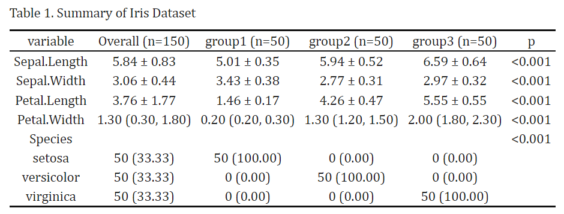

The goal of tidysummary is to streamlines the analysis of clinical data by automatically selecting appropriate statistical descriptions and inference methods based on variable types. See the vignette for more details.
You can install the development version of tidysummary like so:
if (!requireNamespace("remotes", quietly = TRUE)) {
install.packages("remotes")
}
remotes::install_github("htqqdd/tidysummary")
library(tidysummary)
result <- iris %>%
add_var() %>%
add_summary() %>%
add_p()
#Here is an prepared dataset
iris <- iris %>%
mutate(group = factor(rep(1:3, each = 50),
labels = c("group1", "group2", "group3")))
#Now use tidysummary
library(tidysummary)
result <- iris %>%
add_var() %>%
add_summary(binary_show = "all") %>%
add_p()
View(result)kableExtra or others your prefer)
library(kableExtra)
result[is.na(result)] <- ""
result %>%
kbl(caption = "Table 1. Summary of Iris Dataset",
row.names = F,
align = "c") %>%
kable_classic(full_width = FALSE, html_font = "Cambria")
result %>%
writexl::write_xlsx("./test.xlsx")